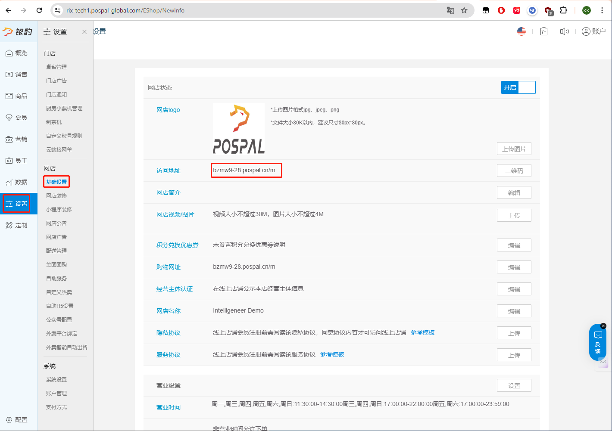
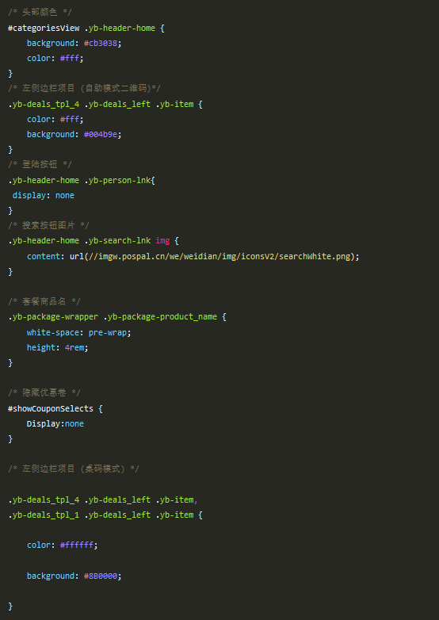

旧版网店修改
2024年11月13日 · Charlie
以下我们拿测试账号测试
首先需要在后台 ---> 设置 ---> 基础设置 ---> 访问地址：https://bzmw9-28.pospal.cn
下一步，将访问地址复制到浏览器里面，并添加后缀 wkb/customize/editcss
https://bzmw9-28.pospal.cn/wkb/customize/editcss
然后登入银豹的账号和密码，登入完成后再将上面的网站放入浏览器中
这是一些比较基础的修改方式，如果需要更高阶的，请联系李辉